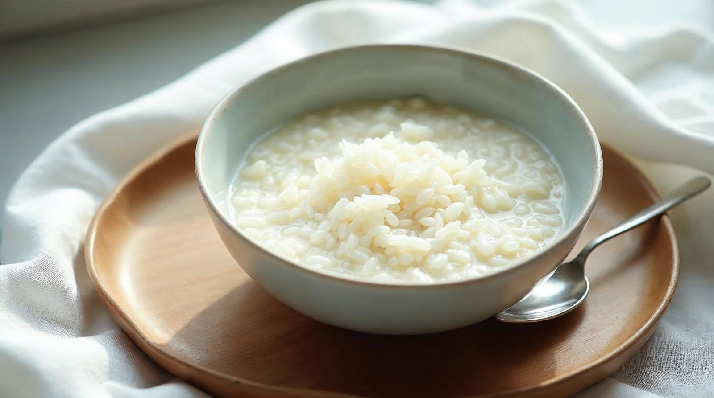

이종호 한의사 감수좋은꿈참사랑한의원 대표원장 (한의사 면허번호 19769)발행 2026-11-26 · 수정 2026-11-26
이 글의 차례
아침에는 그럭저럭 괜찮다가 오후가 되면 혀끝이 뜨거운 국을 마신 것처럼 화끈거리기 시작합니다. 거울로 혀를 들여다봐도 헐거나 빨갛게 부은 곳은 보이지 않습니다. 저녁이 되면 입술 안쪽과 입천장까지 따가워져, 찬물을 머금고 있어야 겨우 가라앉습니다.
진료실에서 이 불편을 말씀하시는 분들은 대개 여러 곳을 다녀오신 뒤입니다. 치과에서도, 이비인후과에서도 겉으로는 큰 이상이 없다는 말을 들으셨다고 합니다. 보이지 않는 불편이라 주변에서 잘 알아주지 않으니, 마음까지 지쳐 계신 경우가 많습니다.
이렇게 입안이 눈에 띄는 상처 없이 데인 듯 화끈거리고 따가운 상태를 구강작열감, 또는 구강작열감 증후군이라고 부릅니다. 혀끝과 혀 가장자리에서 가장 흔하고, 입천장과 입술 안쪽, 잇몸까지 퍼지기도 합니다. 입이 마르거나 맛이 달라지는 느낌이 함께 오는 분도 많습니다.
저는 이 불편을 말씀하시는 분께 먼저 "그 느낌이 분명히 있다"는 것을 확인해 드립니다. 그다음 입안 자체의 문제, 몸 전체의 변화, 드시는 약, 잠과 긴장을 차례로 나눠 보며 함께 실마리를 찾아갑니다.
구강작열감은 어떤 느낌인가요?
말씀하시는 표현은 다양합니다. 뜨거운 국에 덴 것 같다, 고춧가루를 묻혀 놓은 것 같다, 혀가 따끔따끔하다, 입안이 얼얼하고 저리다, 혀가 까끌까끌하다. 겉으로 보이는 상처는 없는데 느낌은 분명히 있다는 것이 공통점입니다.
하루 중 흐름에도 특징이 있습니다. 많은 분이 아침에 눈뜰 때는 덜하다가 오후와 저녁으로 갈수록 심해진다고 말씀하십니다. 반대로 식사를 하거나 껌을 씹는 동안에는 잠시 잊고 지내다가, 조용히 있을 때 다시 느껴지기도 합니다.
입마름, 쓴맛이나 쇠맛, 맛이 밍밍해지는 느낌이 함께 오기도 합니다. 그래서 진료실에서는 화끈거림만 따로 보지 않고, 입안 전체의 느낌을 함께 여쭙습니다.
왜 입안이 화끈거릴까요?
입안 자체의 원인을 먼저 살핍니다. 맞지 않는 틀니나 보철물, 이를 꽉 무는 습관, 혀를 이에 문지르는 버릇, 곰팡이 감염, 치약 성분이나 특정 음식에 대한 예민함이 화끈거림을 만들 수 있습니다. 이런 경우에는 치과에서 먼저 확인하시는 것이 좋습니다.
몸 전체의 변화도 입안에 드러납니다. 철분, 비타민 B12, 엽산, 아연처럼 혀와 입안 점막을 유지하는 데 필요한 영양이 모자라면 혀가 따갑고 매끈해지기도 합니다. 혈당이 높게 이어지거나 갑상선 기능이 달라졌을 때도 입안 감각이 변할 수 있습니다.
호르몬 변화와도 관련이 깊습니다. 구강작열감은 폐경 전후의 여성분에게서 특히 많이 보입니다. 이 시기에는 입안 점막이 얇아지고 침이 줄면서, 작은 자극에도 예민하게 반응하기 쉽습니다.
드시는 약도 살펴야 합니다. 일부 혈압약, 항우울제, 알레르기약처럼 입마름을 가져오는 약은 입안을 건조하게 해 화끈거림을 키울 수 있습니다. 새로 약을 시작한 시기와 불편이 시작된 시기가 겹친다면 처방한 선생님께 먼저 알려 주세요.
이런 원인들을 살펴도 뚜렷한 이유가 잡히지 않는 경우도 많습니다. 이때는 입안의 감각을 전달하는 신경이 예민해진 상태로 보는데, 잠이 부족하거나 긴장과 걱정이 많을 때 더 심해지는 모습을 자주 보입니다.
비슷해 보이지만 다른 불편과는 어떻게 다른가요?
입병이나 혓바늘은 헐거나 돋은 자리가 눈에 보이고, 그 자리를 건드리면 아픕니다. 구강작열감은 겉으로 보이는 자리가 없는데 넓은 범위가 화끈거린다는 점이 다릅니다.
역류로 위산이 올라오면 목과 입안이 시큼하게 따가울 수 있습니다. 이때는 신물, 트림, 가슴 뒤쪽이 타는 느낌이 함께 오고, 눕거나 식사 뒤에 심해지는 경우가 많아서 함께 여쭙니다.
입마름만 있는 경우에는 입안이 텁텁하고 끈적이지만 데인 듯한 화끈거림은 덜합니다. 다만 둘이 함께 오는 분이 많아서, 침이 충분한지 꼭 함께 살핍니다.
한의학에서는 이 불편을 어떻게 보나요?
한의학에서는 혀를 몸 안의 열과 진액, 곧 몸을 적셔 주는 수분의 상태를 비춰 보는 창으로 여깁니다. 혀끝이 붉고 설태가 적으며 입이 마르고 화끈거린다면, 몸을 적셔 주는 힘은 줄고 위로 뜨는 열이 남은 상태로 보는 경우가 많습니다.
이런 분은 얼굴로 열이 오르고, 손발바닥이 화끈거리며, 잠이 얕고 꿈이 많고, 오후로 갈수록 피로해지는 모습을 함께 말씀하시기도 합니다. 저는 입안의 느낌과 함께 이런 몸 전체의 흐름을 같이 읽습니다.
이런 살핌은 치과 진료나 혈액 검사를 대신하는 것이 아닙니다. 입안과 몸 전체의 원인을 먼저 확인하고, 그 위에서 열과 진액, 잠과 긴장의 균형을 함께 살피는 방법이라고 생각해 주시면 됩니다.
구강작열감을 두고 자주 헷갈리는 것
첫째, 보이는 게 없으니 기분 탓이라는 생각입니다. 겉으로 드러나지 않을 뿐 감각은 분명히 있는 불편입니다. 마음의 긴장이 느낌을 키울 수는 있지만, 그렇다고 참고 넘겨야 할 일은 아닙니다.
둘째, 입안을 깨끗하게 하려고 가글을 자주 하는 경우입니다. 알코올이나 강한 향이 든 가글은 오히려 점막을 자극하고 입을 마르게 해 화끈거림을 키울 수 있습니다. 쓰신다면 순한 것으로, 횟수를 줄여 보시길 권합니다.
셋째, 혀를 자꾸 거울로 확인하고 이로 건드려 보는 습관입니다. 걱정되는 마음은 당연하지만, 자꾸 확인할수록 혀의 감각에 더 집중하게 되고 혀끝이 자극을 받기도 합니다. 하루에 한 번, 같은 조명에서만 보시길 권합니다.
계절과 생활에 따라 달라지는 화끈거림
겨울에는 난방으로 실내 공기가 건조해지고 물을 덜 마시게 되면서 입안이 마르고 화끈거림이 심해지는 분이 많습니다. 잠자리에 가습기를 두거나 젖은 수건을 널어 두는 것만으로도 아침 입안이 한결 편하다고 말씀하십니다.
여름에는 땀으로 몸의 물이 빠지고, 찬 음료와 아이스커피를 자주 찾으면서 오히려 입안이 쉽게 마르기도 합니다. 커피는 소변으로 물을 내보내는 쪽으로 작용하니, 커피 한 잔에 물 한 잔을 함께 드시는 습관을 권합니다.
말을 많이 하는 일, 오래 집중하며 입을 다물고 이를 무는 일을 하시는 분은 오후로 갈수록 입안이 마르고 혀가 긴장하기 쉽습니다. 한 시간에 한 번쯤 물을 머금고, 턱과 혀의 힘을 빼는 시간을 짧게라도 만들어 보세요.

식사와 대화가 부담스러울 때는
화끈거림이 심한 기간에는 식사 자체가 부담이 되기도 합니다. 미지근하게 식힌 음식, 부드럽게 익힌 채소와 두부, 달걀찜처럼 자극이 적은 음식을 고르시고, 김치나 젓갈처럼 짜고 매운 반찬은 물에 살짝 헹궈 드셔도 괜찮습니다.
오랜 대화나 통화 뒤에 불편이 커진다면, 중간중간 물을 한 모금씩 머금는 것을 습관으로 만들어 보세요. 입안이 마르기 전에 적셔 주는 것이 마른 뒤에 달래는 것보다 편합니다.
먼저 이렇게 여쭙니다
처음 오시면 대략 이런 순서로 여쭙니다. 미리 떠올려 오시면 이야기가 수월해집니다.
- 화끈거림은 언제부터, 입안의 어느 자리에서 가장 심한가요?
- 아침과 저녁 가운데 언제 더 심한가요? 식사 중에는 어떤가요?
- 입마름, 쓴맛이나 쇠맛, 맛이 밍밍한 느낌이 함께 있나요?
- 틀니나 보철물을 새로 하셨거나, 이를 꽉 무는 습관이 있나요?
- 최근 새로 드시기 시작한 약이나 영양제, 바꾼 치약이 있나요?
- 생리 주기의 변화나 폐경 전후의 변화가 있으신가요?
모든 질문에 정확히 답하지 못하셔도 괜찮습니다. 언제 시작되었는지와 하루 중 언제 심한지, 이 두 가지만 분명해도 이야기의 절반은 시작된 셈입니다.
일상에서 먼저 해 볼 수 있는 것
입안의 자극을 줄이고 촉촉하게 지키는 것이 첫걸음입니다. 하나씩 골라 일주일씩 해 보세요.
- 물을 한 번에 많이 마시기보다 한두 모금씩 자주 머금기
- 맵고 짜고 신 음식, 아주 뜨거운 음식과 음료 줄이기
- 알코올 가글과 강한 향의 치약 대신 순한 것으로 바꾸기
- 커피, 술, 담배는 불편이 심한 기간에 줄이기
- 낮에 이를 꽉 물고 있지 않은지 틈틈이 점검하기
- 잠드는 시각과 깨는 시각을 일정하게 맞추기
화끈거림이 올라올 때는 시원한 물을 입에 잠시 머금고 있거나, 무가당 껌을 천천히 씹는 것이 도움이 된다고 말씀하시는 분이 많습니다. 얼음 조각을 아주 작게 해서 입안에서 천천히 녹이는 것도 방법입니다.
입을 다물고 있을 때 혀끝이 앞니 뒤를 세게 밀고 있지는 않은지도 살펴보세요. 혀를 입천장에 가볍게 붙이고 윗니와 아랫니 사이를 조금 띄운 채 턱에 힘을 빼는 자세가 혀와 턱의 긴장을 덜어 줍니다.
신경이 예민해진 상태에서는 잠과 긴장이 느낌의 크기를 크게 좌우합니다. 잠들기 전 휴대폰을 내려놓고, 등을 대고 누워 숨을 길게 내쉬는 시간을 5분이라도 만들어 보세요. 혀의 감각보다 다른 일에 마음을 두는 시간이 늘어날수록 불편을 덜 느낀다고 말씀하시는 분이 많습니다.
한의원에서 함께 살필 수 있는 경우
- 치과와 내과에서 큰 이상은 없다는데 혀와 입안이 계속 화끈거리는 경우
- 입마름과 함께 얼굴로 열이 오르고 잠이 얕은 경우
- 폐경 전후로 화끈거림이 시작되고 몸의 열감이 함께 느껴지는 경우
- 긴장하거나 피곤한 날 화끈거림이 유독 심해지는 경우
- 입안 불편 때문에 식사와 대화가 부담스러워진 경우
좋은꿈참사랑한의원에서는 먼저 아래 '먼저 확인이 필요한' 신호가 없는지 살핀 뒤, 맥과 혀, 입안의 촉촉한 정도를 함께 봅니다. 혀끝과 가장자리의 색, 설태의 두께, 갈라짐이 있는지를 살피고, 턱과 목 주변 근육의 긴장도 직접 만져 보며 확인합니다.
진찰한 내용을 바탕으로 침, 한약 상담, 생활 관리 가운데 지금 상태에 맞는 것을 정하고, 잠과 자극 줄이기 가운데 바꿔 볼 것 하나를 함께 고릅니다. 턱과 목이 많이 굳어 있다면 그 부분도 함께 풀어 드립니다. 한약을 상의할 때는 드시는 약을 모두 확인하고 신중하게 정합니다.
치과나 내과에서 받고 계신 진료와 처방받은 약은 그대로 이어 가시면 됩니다. 처방받은 약은 처방한 선생님과 상의 없이 멈추지 않으시도록 안내하고, 필요하면 치과 진료를 함께 받으시도록 권합니다.
이렇게 기록해 오시면 상담이 쉬워집니다
화끈거림은 하루 중 흐름이 뚜렷한 경우가 많아서 기록이 큰 도움이 됩니다. 2주 정도만 간단히 적어 보세요.
- 아침, 점심, 저녁의 화끈거림 세기(0~10)
- 가장 불편했던 자리(혀끝, 가장자리, 입천장, 입술 안쪽)
- 그날 먹은 맵거나 뜨거운 음식, 커피와 술
- 잠든 시각과 깬 시각, 잠의 질
- 긴장했거나 바빴던 날 표시
- 새로 쓴 치약, 가글, 약
기록을 나란히 놓고 보면 화끈거림이 덜했던 날과 심했던 날의 차이가 보이기 시작합니다. 잠을 잘 잔 날, 바쁘지 않았던 날에 덜했다면 그것이 다음에 이어 갈 생활의 실마리가 됩니다. 반대로 특정 음식이나 치약을 쓴 날 심했다면, 그 하나를 바꿔 보는 것이 다음 걸음이 됩니다.
보이지 않는 불편과 지내 오신 분께
입안이 화끈거리는 불편은 겉으로 보이지 않아서 혼자 견디시는 시간이 깁니다. 괜찮아 보인다는 말을 들을 때마다 오히려 더 외로워지셨을 수도 있습니다. 저는 그 느낌이 분명히 있다는 것에서부터 이야기를 시작합니다. 불편을 말로 꺼내 놓는 것만으로도 마음이 한결 가벼워졌다고 말씀하시는 분이 많습니다.
구강작열감은 하루아침에 달라지기보다, 화끈거림이 덜한 날이 조금씩 늘어나는 모양으로 변하는 경우가 많습니다. 이번 주에는 물을 자주 머금기와 자극적인 음식 줄이기 가운데 하나만 골라 보세요. 다음에 오시면 그 기록을 함께 펼쳐 보겠습니다.
이런 증상은 먼저 확인이 필요합니다
- 입안에 2주 넘게 낫지 않는 헌 자리, 단단한 멍울, 하얗거나 붉은 반점이 있는 경우
- 혀나 입술, 얼굴이 갑자기 붓거나 숨쉬기와 삼키기가 힘든 경우
이런 신호가 있으면 한의원보다 가까운 병원이나 응급실을 먼저 찾으세요.
함께 읽으면 좋은 글
- 혀 가장자리의 이 자국과 혀의 갈라짐은 무엇을 살피는 단서인가요?
- 양치를 해도 입냄새가 신경 쓰일 때, 입·코·속의 원인은 어떻게 나눠 살피나요?
- 혀에 하얗거나 노란 막이 끼는 설태는 무엇을 뜻하나요?
- 한의원에서 혀를 보는 설진은 무엇을 살피는 검사인가요?
- 속쓰림과 신물이 오래 갈 때 어떤 점을 살펴보고, 언제 검사를 받아야 하나요?
여쭙는 것
- 화끈거림은 언제부터, 입안의 어느 자리에서 가장 심한가요?
- 아침과 저녁 가운데 언제 더 심한가요? 식사 중에는 어떤가요?
- 입마름, 쓴맛이나 쇠맛, 맛이 밍밍한 느낌이 함께 있나요?
생활에서 해 볼 것
- 물을 한 번에 많이 마시기보다 한두 모금씩 자주 머금기
- 맵고 짜고 신 음식, 아주 뜨거운 음식과 음료 줄이기
- 알코올 가글과 강한 향의 치약 대신 순한 것으로 바꾸기
한의원에서 함께 살필 것
- 치과와 내과에서 큰 이상은 없다는데 혀와 입안이 계속 화끈거리는 경우
- 입마름과 함께 얼굴로 열이 오르고 잠이 얕은 경우
- 폐경 전후로 화끈거림이 시작되고 몸의 열감이 함께 느껴지는 경우
먼저 확인이 필요한 신호
- 입안에 2주 넘게 낫지 않는 헌 자리, 단단한 멍울, 하얗거나 붉은 반점이 있는 경우
- 혀나 입술, 얼굴이 갑자기 붓거나 숨쉬기와 삼키기가 힘든 경우
한눈에 보는 표
| 구분 | 핵심 |
|---|---|
| 여쭙는 것 | 화끈거림은 언제부터, 입안의 어느 자리에서 가장 심한가요? 아침과 저녁 가운데 언제 더 심한가요? 식사 중에는 어떤가요? |
| 생활에서 해 볼 것 | 물을 한 번에 많이 마시기보다 한두 모금씩 자주 머금기 맵고 짜고 신 음식, 아주 뜨거운 음식과 음료 줄이기 |
| 한의원에서 함께 살필 것 | 치과와 내과에서 큰 이상은 없다는데 혀와 입안이 계속 화끈거리는 경우 입마름과 함께 얼굴로 열이 오르고 잠이 얕은 경우 |
| 먼저 확인이 필요한 신호 | 입안에 2주 넘게 낫지 않는 헌 자리, 단단한 멍울, 하얗거나 붉은 반점이 있는 경우 혀나 입술, 얼굴이 갑자기 붓거나 숨쉬기와 삼키기가 힘든 경우 |
자주 묻는 질문
혀가 화끈거리는데 겉으로 아무것도 안 보이면 괜찮은 건가요?
겉으로 보이지 않아도 감각은 분명히 있는 불편입니다. 치과에서 입안을 먼저 확인하고, 영양과 혈당, 드시는 약, 호르몬 변화, 잠과 긴장을 함께 나눠 살핍니다.
가글을 자주 하면 도움이 되나요?
알코올이나 강한 향이 든 가글은 점막을 자극하고 입을 마르게 해 오히려 불편을 키울 수 있습니다. 쓰신다면 순한 것으로, 횟수를 줄여 보시길 권합니다.
폐경 무렵부터 혀가 따가운데 관련이 있나요?
이 시기에는 입안 점막이 얇아지고 침이 줄어 화끈거림이 생기기 쉬운 것으로 알려져 있습니다. 몸의 열감, 잠, 입마름을 함께 살펴봅니다.
혈액 검사에서 철분이나 비타민이 부족하다고 나오면 어떻게 하나요?
검사를 한 병원의 안내에 따라 보충하시면 됩니다. 한의원에서는 그와 함께 식사의 고른 정도와 소화, 잠을 함께 살펴봅니다.
좋은꿈참사랑한의원은 재진 때 지난번 이야기부터 이어서 여쭙니다. 진료시간과 예약은 오시는 길에서 확인하세요.
어디서 상담받을 수 있나요?
좋은꿈참사랑한의원은 서울 동작구 만양로2길 2 신성빌딩 3층·5층(서울 동작구 상도동, 7호선 상도역 3번 출구 근처)에 있습니다. 한의사 3명(이종호 대표원장, 조영기 수석진료원장, 정원영 진료원장)이 진료합니다. 진료시간은 평일 09:30~20:00(점심 13:00~14:00), 토·일·공휴일 09:30~15:00이며, 방문 전 전화로 확인을 권합니다. 예약은 네이버 예약, 카카오톡 상담, 전화 02-815-7510로 받습니다.
이 글은 일반적인 건강 정보이며 개인의 진단이나 치료를 대신하지 않습니다. 증상이 있거나 복용 중인 약이 있다면 진료를 통해 확인하세요. 치료 효과는 개인마다 다를 수 있습니다.
작성 기준: 일반적으로 알려져 있는 건강 정보를 참고해 정리했습니다(대표원장 감수). 증상 기록은 1~2주 동안 하루 1회, 비슷한 시간에 적어 오시면 지난 상태와 비교하기 쉽습니다.